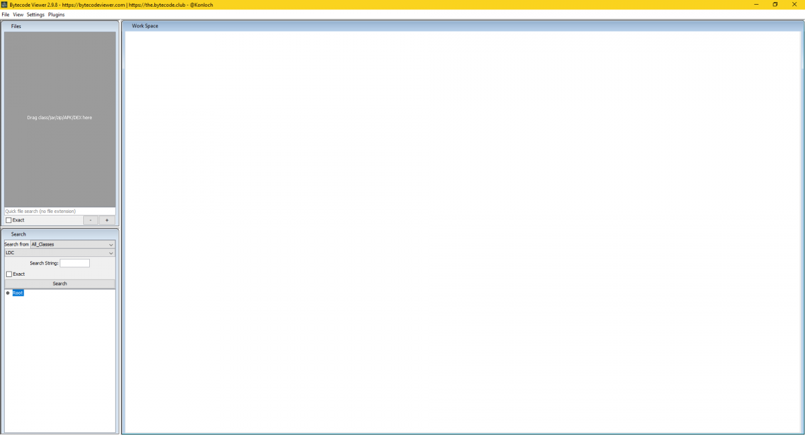

Osiguravanje java koda na moblinim aplikacijama
Temu rezervirala: Gloria Babić
Sažetak: Otežavanje reverse engineeringa pomoću obfuscation toola.
- napisati jednostavnu android aplikaciju
- osigurati je pomoću obfuscation toola (Jarg)
- po mogućnosti napisati vlastiti obfuscation tool
- testirati pomoću najpopularnijih alata za reverse engineering
Sadržaj |
Uvod
Obfuscate ili doslovno prevedeno na hrvatski – zamračiti, zbuniti, začuditi – je način zaštite koda od reverznog inženjeringa namjernim kreiranjem koda koji je na prvi pogled nerazumljiv te ga je tako teže napasti ili kopirati. Važno je napomenuti kako obfuskacija nije potpuna zaštita kao što je npr. Enkripcija, već više prepreka. Ponekad je moguće obfuscirani kod jednostavno dešifrirati istim postupkom kako je i obfuscian ili jednostavno uložiti više vremena u razumijevanje pomršenog koda. Postoji naravno limit u kojem možemo zamrsiti kod jer ga određeni kompajler i dalje treba može prepoznati i kompajlirati. Osim zaštite, obfuskacija se koristi i za rekreacijske izazove dešifriranja koda. Kod se može obfuscirati ručno, a postoje i programi koji to čine za nas.
Android aplikacija
Kako bi pokazali djelovanje obfuskacije za primjer uzimamo jednostavnu Andoid aplikaciju koja je izrađena u Android Studiju. Aplikacija na vrlo banalan način pretvara dolare u funte. Sadrži jednu main funkciju u kojoj se odvija računanje. Želimo zaštiti kod aplikacije kako bi otežali kopiranje naše jedinstvene implementacije.
{kind=link}
Nakon instaliranja aplikacije na mobilni uređaj, ADB (Android debug bridge) alatom je izvučena .apk datoteka. Kako je /data/app zaštićena mapa, možemo samo pogledati popis paketa ali ne i povući njihove .apk datoteke na računalo. Kako bismo to napravili, trebamo kopirati .apk datoteku na neko drugo mjesto na mobitelu koristeći naredbu $ adb shell cp /data/app/<ime paketa>/base.apk /storage/emulated/legacy/Download/base.apk . Putanju apk datoteke ćemo doznati koristeći $ adb shell pm path <ime paketa> . Nakon toga izađemo iz shella i napravimo pull $ adb pull /storage/emulated/legacy/Download/base.apk
Bytecode Viewer
Kako bismo provjerili valjanost obfuskacije, koristit ćemo popularni alat za reverzni inženjering Bytecode Viewer. Bytecode Viewer (BCV) je dizajniran da bude izuzetno user friendly i prilagođen je za početnike. Gotovo sve je dostupno kroz sučelje, postavke, alate, itd. Pomoću njega možemo pogledati što se nalazi u jar, zip, APK i DEX datotekama. Sadrži pet različitih java dekompajlera, dva bytecode editora, java kompajler, pretraživanja i još puno mogućnosti.
]
{kind=link}
Jarg
Jarg je java obfuskator koji smanjuje veličinu jar datoteke u kojoj se nalaze java klase. Nakon što Java klasa prođe kroz jarg proceduru postaje optimizirana i brža, a kako je preimenovana također ju je teže i analizirati. Moglo bi se onda reći da je jarg ujedno i 'Java Optimizer' i 'Java Obfuscator' i 'Java Shrinker' ili 'Java Reducer'. Jarg je u potpunosti napravljen u Javi te je opensource i besplatan.
Kako jarg djeluje
Jarg čita klase iz jar datoteke, i analizira klas, izvodi iduće procese te kao rezultat daje a komprimiranu jar datoteku.
- Uklanjanje
- Uklanjanje debugging informacija
- Uklanjanje atributa nepotrebnih pri izvršavanju
- Uklanjanje nekorištenih stavki u konstantama
- Uklanjanje nekorištenih polja
- Uklanjanje nekorištenih metoda
- Uklanjanje nekorištenih klasa
- Uklanjanje nekorištenih interfacea
- Preimenovanje: mijenja se u kraće ime.
- Preimenovanje privatnih polja
- Preimenovanje privatnih metoda
- Preimenovanje polje sa defaultnom privatnošću
- Preimenovanje metoda sa defaultnom privatnošću
- Preimenovanje klasa sa defaultnom privatnošću
- Preimenovanje interfacea sa defaultnom privatnošću
- Prepoznavanje i preimenovanje metoda koje su overridane
- Preimenovanje paketa ----[Nije još implementirano]
- Bytecode Optimizacija
- Uklanjanje NOP instrukcija
- Optimizacija poretka lokalnih varijabli ----[Nije još implementirano]
- Komepresija lokalnih varijabli
- Uravnavanje metoda ----[Nije još implementirano]
- Analiza konstanti ----[Nije još implementirano]
- Izlazna jar datoteka
- Uklanjanje direktorija stavki nepotrebnih pri izvršavanju
- Maksimizacija kompresije
Koje su posljedice korištenja jarga
Korištenjem Jarga dobivamo sljedeće efekte:
- Kako je jar datoteka manja, vrijeme učitavanja i preuzimanja je kraće.
- Kako su Java klase manje, čitanje klase je brže.
- Kako su imena paketa, klasa, interfaceova, polja i metoda kraća, povezivanje na JVM je kraće.
- Kako su imena kraća i nepotrebne stavke obrisane, količina iskorištene memorije u JVM se smanjuje.
- Zbog optimizacije bytecoda, brže se izvršava.
Kako koristiti jarg
Trebamo se smjestiti u direktorij u kojem se nalazi jar datoteka koju želimo procesirati u jargu. Zatim pokrenemo naredbu > java -jar jarg.jar <ime jar datoteke>.jar
Jarg kreira <ime jar datoteke>_s.jar što je procesirana i smanjena jar datoteka izvorne datoteke.
Na idućoj slici možemo vidjeti kako je izgledao izvorni kod aplikacije:
{kind=link}
.apk datoteku koju smo ranije povukli s mobitela otvoramo u Bytecode Vieweru kako bismo je pretvorili u .jar datoteku.
{kind=link}
{kind=link}
Kada smo dobili željeni oblik, primjenjujemo već spomenutu naredbu.
{kind=link}
Statistika nam pokazuje koliko i kako je jarg promjenio kod.
Na idućoj slici vidimo i željeni .jar file.
{kind=link}
Zaključak
Zaključak ovog rada bi bio da je jarg poprilično zastarjeli obfuskator kojeg jako zbunjuju dodatne android datoteke te ne želi surađivati. Nije uspio prepoznati klase kako bi ih preimenovao već je samo blago uklonio neke nekorištene datoteke. Popratne android datoteke su uklonjene iz .jar datoteke kako bi jarg uopće uspio kreirati novi file_s.jar . Preporučeno je koristiti neke novije alate poput ProGuarda kojega je dovoljno samo uključiti unutar Android Studija.
Literatura
- jarg - Java Archive Grinder, Dostupno 31.01.2018 http://jarg.sourceforge.net/
- Wikipedia (2018.) Obfuscation (software), Dostupno 31.01.2018 https://en.wikipedia.org/wiki/Obfuscation_(software)
- Bytecode Viewer wiki 31.01.2018 https://wiki.bytecode.club/Bytecode_Viewer
- Bytecode Viewer, Dostupno 31.01.2018 https://www.bytecodeviewer.com/
- Android Debug Bridge (adb), Dostupno 31.01.2018 https://developer.android.com/studio/command-line/adb.html